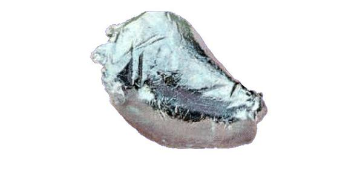

Numero atomico: 43
Massa atomica: [98,91]
Temperatura di fusione (°C): 2157
Temperatura di ebolizione (°C): 4265
Energia di prima ionizzazione (kj/mol): 702
Elettronegatività (secondo Pauling): 1,90
Densità: 11,50
Numeri di ossidazione: +4+5+6+7
Configurazione elettronica: 1s2, 2s2, 2p6, 3s2, 3p6, 3d10, 4s2, 4p6, 4d5, 5s2
Maggiori Informazioni